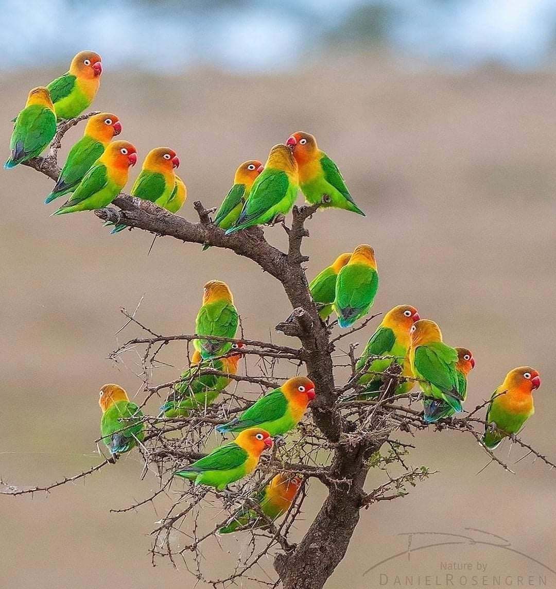

¿Que tenes que saber sobre ellos?
Son loros pequeños, de cola corta y de plumaje muy colorido. El tamaño de las nueve especies está comprendido entre 13 y 16 cm y hasta 24 cm de envergadura con 9 cm para una sola ala y de 40 a 60 g de peso. Se encuentran entre los loros más pequeños, caracterizados por una constitución robusta, una cola corta y roma y un pico relativamente grande y afilado.
Se alimentan de semillas, frutas y yemas. Tienen una vida media entre diez y doce años (aunque no es difícil que en cautividad y con unos cuidados adecuados puedan llegar a vivir hasta quince años).
En la naturaleza, los agapornis habitan en regiones de sabana y bosques abiertos, donde se alimentan de semillas, frutas y brotes tiernos. En cautiverio, requieren una dieta equilibrada, espacio suficiente para moverse y estimulación mental para mantenerse saludables y felices.
Los inseparables de tipo salvaje son en su mayoría verdes con una variedad de colores en la parte superior del cuerpo, según la especie. El agaporni de Fischer, el Nigrigenis y el Personata tienen un prominente anillo ocular blanco. Se han producido muchas mutaciones de color mediante la cría selectiva ya que son populares como mascotas debido a su naturaleza sociable, su comportamiento afectuoso y su hermoso plumaje, que varía en colores vibrantes como verde, amarillo, azul y naranja.
Suelen ser animales bastante confiados con el ser humano, aunque mucho más con los de su propia especie y otras aves. Por norma general no suele ser un animal violento ni suele atacar, salvo que se sienta muy amenazado. Su esperanza de vida puede alcanzar los 10 a 15 años con los cuidados adecuados, lo que los convierte en una responsabilidad a largo plazo para sus dueños.
